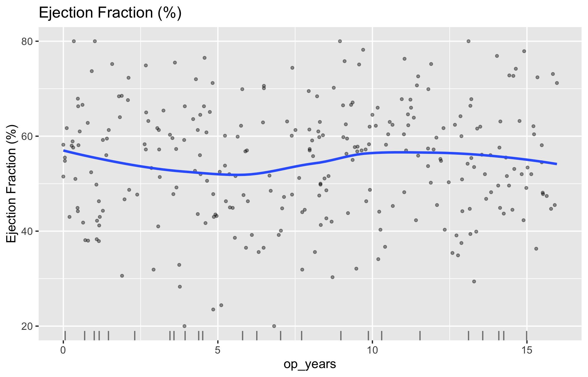
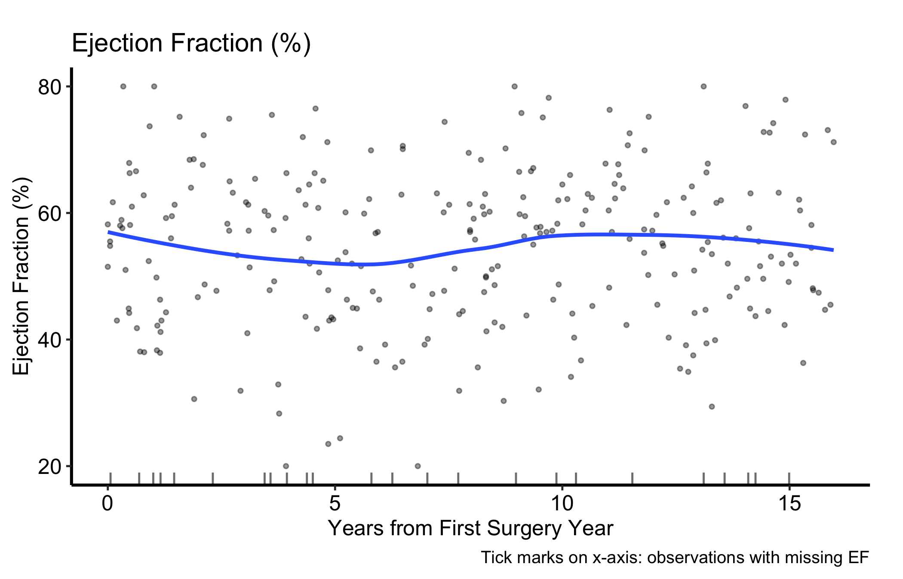
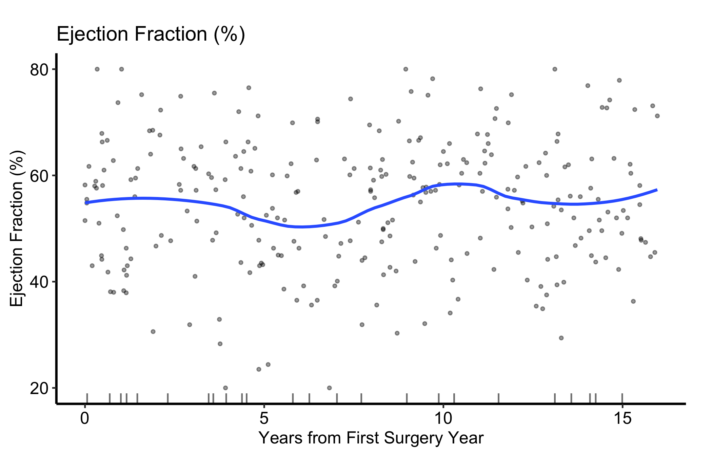

Do two continuous measurements move together, and is their relationship straight or curved? A scatter plot keeps every observation visible while a smoother gives the cloud a direction.
12.1 When to use it
Before you fit anything, you want to look at the data. A continuous measurement plotted against a time axis answers the most basic exploratory question we ask of a longitudinal cohort: is this number drifting as the years go by? Reach for the scatter plot whenever you have a continuous variable (ejection fraction, LV mass, peak gradient) and a continuous reference axis (years since first surgery, operation date) and you want to see the cloud of points and the trend through them at the same time.
hv_eda()(Ehrlinger 2026) is the exploratory workhorse. Point it at a column and a reference axis and it picks the right display: when y_col is continuous it returns a scatter plot with a LOESS smoother (locally weighted regression, a flexible curve that follows the data without assuming a straight line) drawn through the cloud. The same function draws bar charts for categorical columns, but those live in their own chapter; here we stay with the single continuous case. As with the rest of the package, plot() on the hv_eda object hands back a bare ggplot. You finish it with colour scales, labels, and a house theme using the usual +.
One detail that matters in practice: observations missing y_col are not silently dropped. They are drawn as rug ticks along the x-axis, so you can see where in time your measurement is missing rather than pretending the data are complete.
12.2 The data it needs
hv_eda() expects one row per observation with a continuous x_col (the reference axis) and a continuous y_col (the measurement). Nothing else is required. sample_eda_data() returns a mixed-type cohort of 300 patients; here we use the continuous op_years (years since the patient’s first surgery) for x and ef (ejection fraction, the percent of blood the left ventricle pumps with each beat) for y.
If you are not sure a column will be treated as continuous, ask the classifier directly. eda_classify_var() reports "Cont" for continuous columns, "Cat_Num" for numeric categories, and "Cat_Char" for character categories, so you can confirm the plot type before you build it.
The class selects plot.hv_eda(). Its metadata confirms the continuous display and the observation count, while rug_data holds the missing-EF observations that will appear as ticks.
x y
3 0.06 NA
5 9.87 NA
32 1.00 NA
42 14.09 NA
47 3.94 NA
81 3.58 NA
12.4 Build it
Start from the bare panel so you can see what the constructor produced before any styling. Build the object with x_col/y_col; the y_label argument sets the axis and legend text in place of the raw column name.
p_scatter <-plot(eda_scatter)p_scatter

That is the raw material: the scatter cloud, the LOESS smooth through it, and the rug of missing-EF observations along the bottom. Now layer on the house style, constrain the axes to a sensible range, and add a caption that tells the reader what the x-axis ticks mean. There is no grouping aesthetic, so the panel needs no legend.
p_scatter +scale_x_continuous(breaks =seq(0, 15, 5)) +scale_y_continuous(limits =c(20, 80), breaks =seq(20, 80, 20)) +labs(x ="Years from First Surgery Year",caption ="Tick marks on x-axis: observations with missing EF") +theme_hv_manuscript()

Figure 12.1: Ejection fraction against years from first surgery, with a LOESS smoother and a rug of observations missing EF
Swap in theme_hv_poster() when you want the larger, poster-sized text for arm’s-length reading.
12.5 Read it
A scatter plot with a LOESS smooth gives you two things to read at once. Years from first surgery are on the x-axis and ejection fraction is on the y-axis. The default LOESS fit uses nearby observations to summarize the descriptive association; it is not a patient-specific trajectory and does not show that time since surgery caused EF to change. Look for:
The trend, not the points. The smoother is the signal. Is the curve flat (the measurement is stable across the cohort), sloping (a drift you may need to adjust for), or bending (a non-linear pattern a straight line would miss)? In our example the LOESS line stays roughly level, which says ejection fraction is not drifting systematically with time since surgery.
The spread around the trend. A tight cloud means the trend is well determined; a wide one means individual patients vary a lot and the smooth is an average you should not over-read.
The rug at the bottom. Each tick is a patient whose EF is missing. If the ticks cluster in one region of time, your measurement is missing in a pattern, not at random, and the trend in that region rests on fewer points than the cloud suggests.
12.6 Adapt it
12.6.1 Tuning the LOESS smoother
plot.hv_eda() exposes smooth_method and smooth_span to control the overlaid curve. smooth_span is the fraction of the data used in each local fit: a smaller span follows local structure more closely (and wiggles more), a larger span gives a flatter, more conservative trend. When you are unsure whether a bump is real, compare two spans before you commit to a story.
plot(eda_scatter, smooth_method ="loess", smooth_span =0.5) +scale_x_continuous(breaks =seq(0, 15, 5)) +scale_y_continuous(limits =c(20, 80), breaks =seq(20, 80, 20)) +labs(x ="Years from First Surgery Year",y ="Ejection Fraction (%)") +theme_hv_manuscript()

Figure 12.2: The same scatter with a narrower LOESS span (0.5), which follows local structure more closely than the default
12.7 Deliver it
Move the final panel to Finish and deliver the result for manuscript, poster, or slide output. Keep the smoother method, span, and meaning of the rug in the caption so the exported figure can stand on its own.
12.8 Pitfalls
Reading the points instead of the trend. With a few hundred patients the cloud looks busy and your eye finds patterns that are not there. The LOESS curve is what you report; the scatter is context.
Over-fitting the span. A small smooth_span will track every local dip, including dips driven by one or two patients. If a feature disappears when you widen the span, it was probably noise.
Trusting the ends of the curve. LOESS is least stable at the extremes of the x-axis, where it has data on only one side. Treat the leftmost and rightmost bends with the same caution you would give a sparse tail.
Ignoring the rug. Missing values become rug ticks, not gaps in the trend. If the ticks pile up in one time window, the smooth there is built on thin data even though the line looks just as confident.
Ehrlinger, John. 2026. hvtiPlotR: HVTI Ggplot2 Themes and Clinical Plot Functions for the Cleveland Clinic Heart & Vascular Institute. https://github.com/ehrlinger/hvtiPlotR.